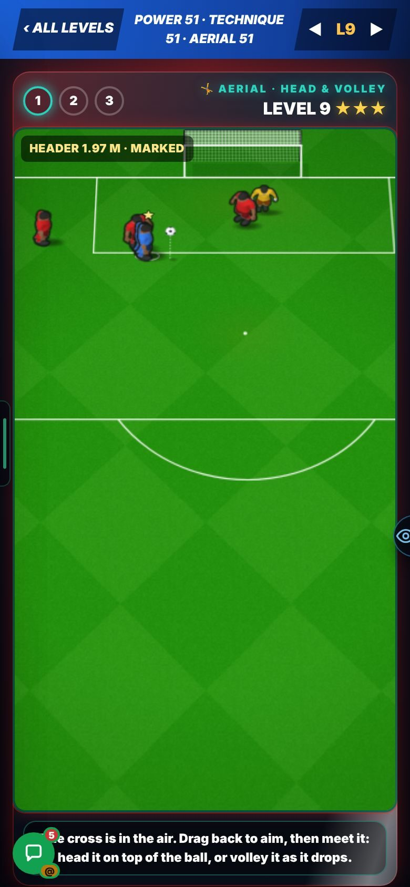
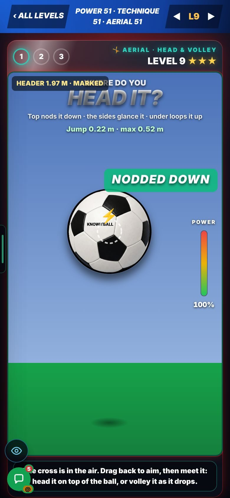
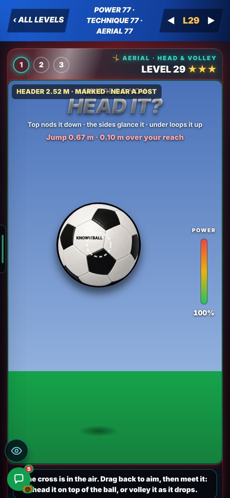
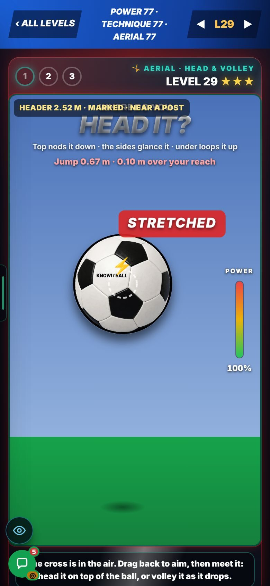
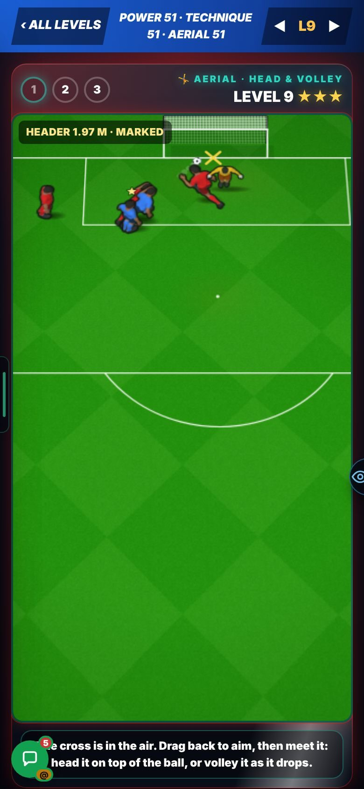
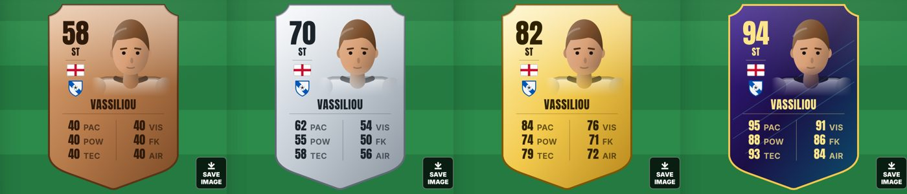
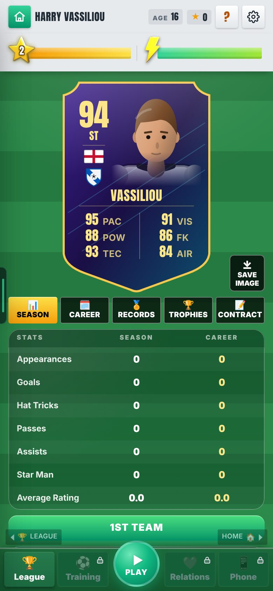
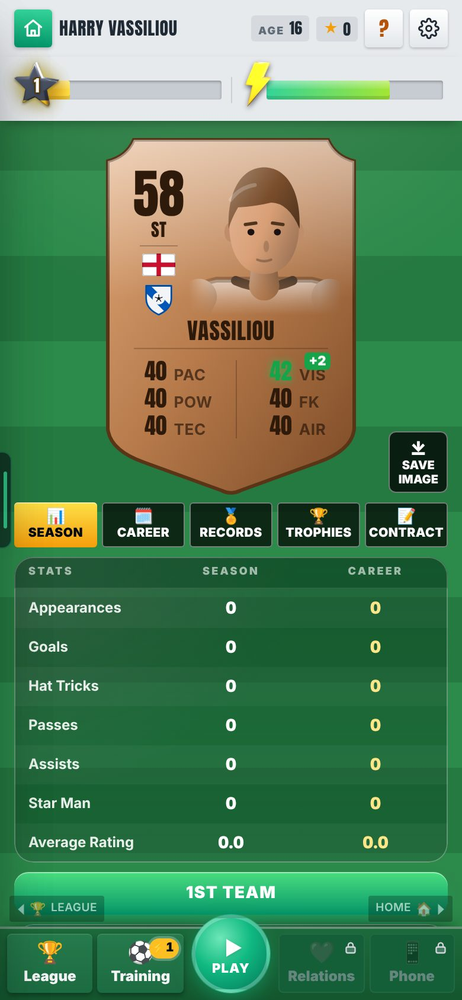
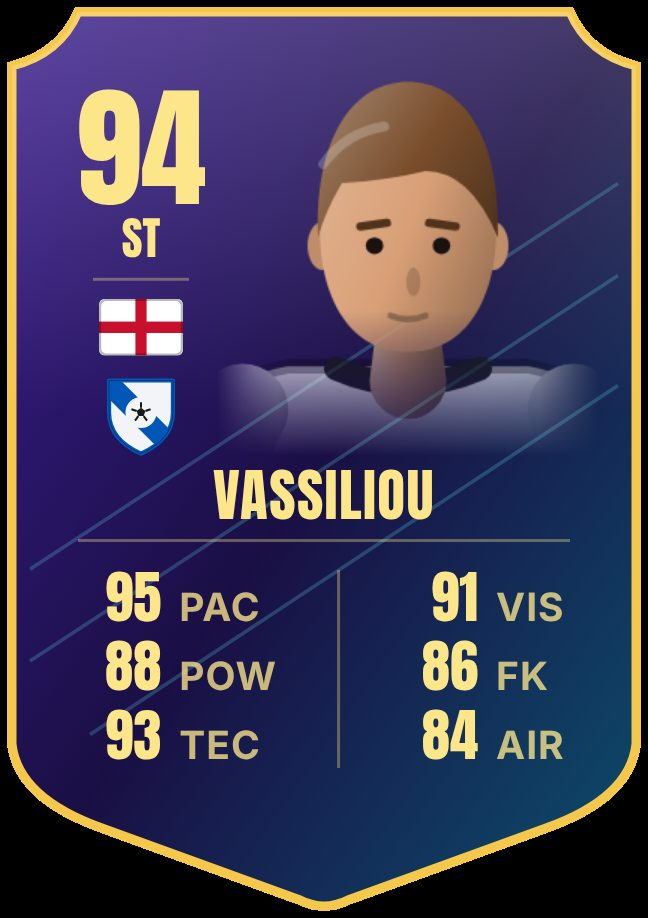
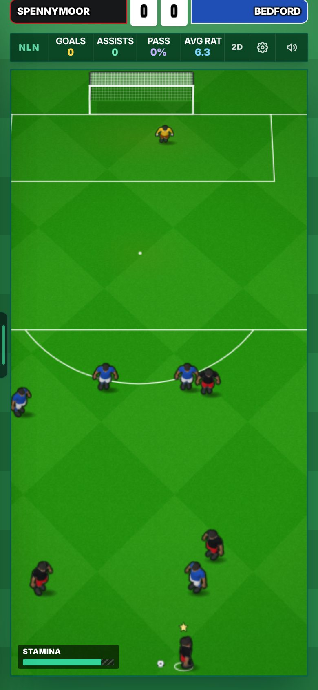

Live: merged to main (PRs #755 to #758).
22 Oct 2026. Four rounds that went live today. In Admin → Patch notes this is v0.106h.
Aerial & Acrobatics did the drill and the numbers, but a real match ignored it. A header or volley in a real match still used Technique.
The match file was not wired to the new skill. That edit waited for Harry's Allow (engine rule RUL-ENG-001).
A header or volley now reads Aerial instead of Technique. Tired legs lower it. At Aerial 60 nothing changes, so a player at 60 plays exactly as before. Merged as PR #755.
Every cross arrived at 1.85 m, whoever you were. Aerial did not change how high you could reach.
Header height was one fixed number. The varying height was built but switched off in 0.105h until it was measured.
Cross height now runs 1.5 to 2.6 m. Your jump depends on Aerial: 0.45 m at Aerial 40, 0.75 m at Aerial 90. Your reach is 2.14 m at Aerial 30, 2.32 m at 60 and 2.50 m at 90. A cross above your reach is a stretched header. Merged as PR #756.




You could not see why a header was easy or hard. The screen showed no jump.
Height and reach were not on the strike screen.
The header screen shows "Jump 0.22 m · max 0.52 m". When the ball is above your reach it shows red: "0.10 m over your reach". Drill header levels climb from 1.75 m to 2.55 m, so a high level asks for a real jump.
A header goal landed with the same weight as a ground shot. There was no sense of a leap.
The moment was the same length and had no sound of its own.
With Match feel: New a header gets a longer beat, a freeze of about 120 ms (never more than 150), a camera punch, and its own header sound. The sound is made in code and is CC0. Match feel: Old is unchanged.

Stats opened on a list of numbers. Nothing showed who your player is at a glance.
There was no one picture of your player. Overall, skills and face lived on separate screens.
A card at the top of Stats: overall (the existing formula), position, the drawn face, surname, flag, badge, and six numbers: PAC, POW, TEC, VIS, FK and AIR. The colour follows overall: bronze under 65, silver 65 to 74, gold 75 to 87, special 88 and up. A new career at 58 is bronze. A green +N flashes once after a skill goes up. "Save image" draws a PNG of the card. Merged as PR #757.




An even match was not even. Level teams gave one side 44.5% of the ball, and corners ran 3.94 to 5.37.
The real match, the radar, sim90, the ruler and "Sim this match" each built their own match inputs. They did not agree, and a bias sat in one of them.
All five now use one shared builder. An even match: possession 44.5% → 49.8%; corners 3.94 v 5.37 → 5.43 v 5.65. Radars count possession one way. Merged as PR #758.

A chance you missed in the final third just ended. Real football gives a corner or a loose ball.
Nothing followed a miss.
With Match flow: New, a missed chance in the final third can win a corner or a second ball. Match flow: Old plays exactly as before.
Top v bottom possession is 66.6% against 62% in real football.
Piece 4 fixed the even match. The strength gap is a later piece.
Piece 5. Not changed yet.
In the Head & Volley drill the level label sits a little over the "HEAD IT?" text.
Seen on the drill screen; the cause is not looked into yet.
Not changed yet.
The header sound is made in code. Nobody has listened to it yet.
A test can see a sound play but cannot judge how it sounds.
Someone needs to listen with Match feel: New and say if it is right.
Sim piece 5. Top v bottom possession is 66.6%, real football is 62%.